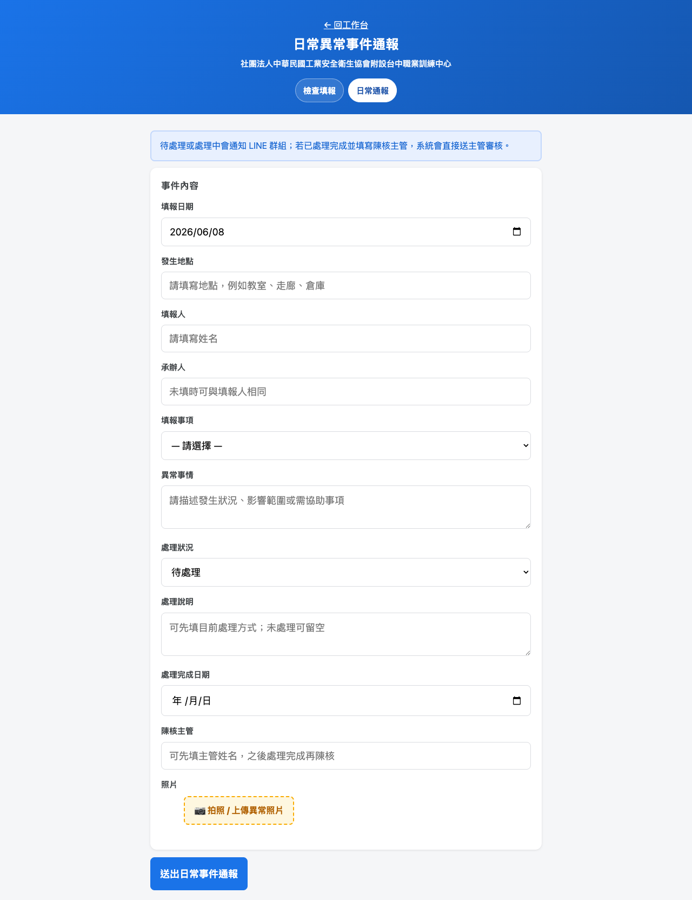
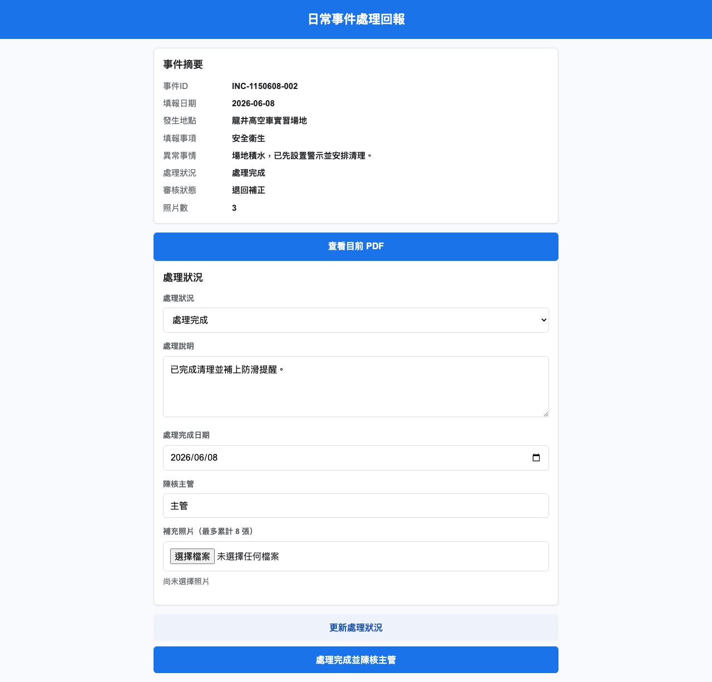

承辦流程
承辦從公開表單建立事件，後續處理都由 LINE 圖卡或指令進入安全連結頁。
1
填寫通報
填發生地點、事項、異常事情、承辦人、處理狀況與照片。
2
產生 PDF
系統建立事件 ID，產生初版 PDF，照片納入事件紀錄。
3
LINE 圖卡
待處理、處理中、退回補正都以日常異常事件圖卡顯示，可查詢或處理回報。
4
處理回報
承辦開啟處理頁，更新狀態、說明、完成日與補充照片；處理中且填主管姓名時，會送主管填寫處理意見。
5
正式陳核
處理完成且有主管姓名時，送出主管審核通知。
6
結案或補正
主管同意則結案；退回則承辦收到補正通知再回報。

實際畫面：日常異常事件通報表

實際畫面：處理回報頁，承辦可更新狀態並送主管審核
主管流程
主管在處理中階段可先收到處理意見圖卡；承辦標示處理完成並陳核後，主管再收到正式審核圖卡。主管審核頁會顯示事件摘要、處理紀錄、PDF 與審核操作。
1
處理中意見
指定主管可先填寫處理意見，系統以圖卡公開最新意見。
2
收到待審圖卡
承辦處理完成後，指定主管收到正式審核 LINE 圖卡。
3
檢視資料
確認事件、處理說明、照片與 PDF 時序。
5
系統通知
同意後重產正式 PDF；退回則通知訂閱者/群組補正。

實際畫面：月檢表。設備月檢仍採主管手寫簽核；日常事件則為按鈕審核。
PDF 與處理時序
日常異常事件每個重要階段都會產生或重產 PDF，方便追蹤處理過程。
| 時序 | 觸發時機 | 系統紀錄 | LINE 通知 |
|---|
| 1 | 承辦送出通報表 | 建立初版事件紀錄 | 推播訂閱者/群組圖卡 |
| 2 | 承辦更新處理狀況 | 更新處理進度與 PDF | 圖卡可查詢最新事件；處理中且填主管姓名時，推播訂閱者清單中「是否為主管=是」的指定主管填意見 |
| 3 | 主管填寫處理意見 | 意見寫入事件紀錄與 PDF 時序 | 以圖卡推播給訂閱者/群組，承辦可續填 |
| 4 | 承辦處理完成並陳核 | 轉為等待主管審核 | 推播訂閱者清單中「是否為主管=是」的指定主管 |
| 5A | 主管同意結案 | 事件狀態改為已結案 | 事件完成 |
| 5B | 主管退回補正 | 事件狀態改為退回補正 | 通知訂閱者/群組補正 |
事件 ID`INC-1150608-001`，民國年月日加流水號。